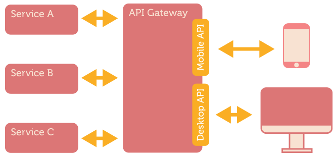
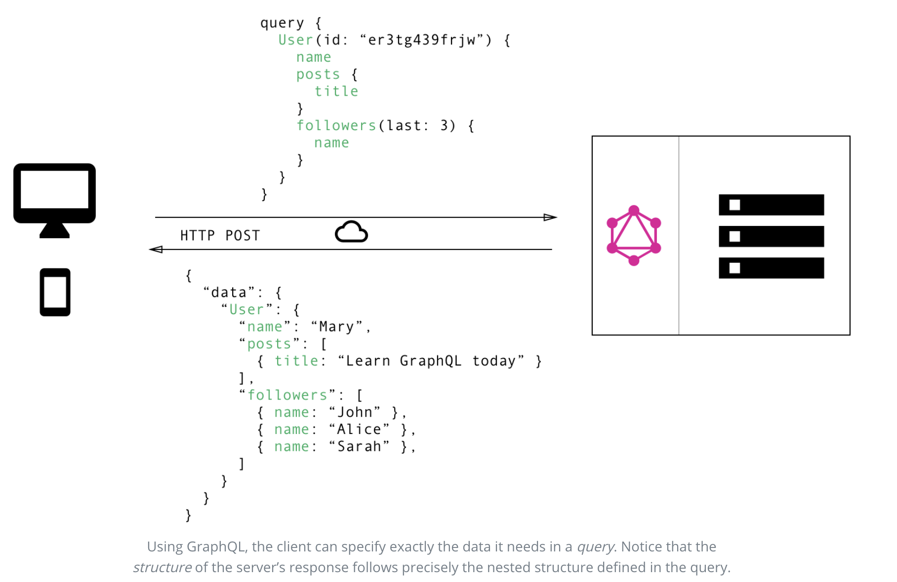
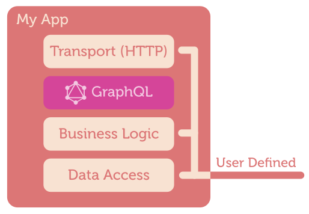
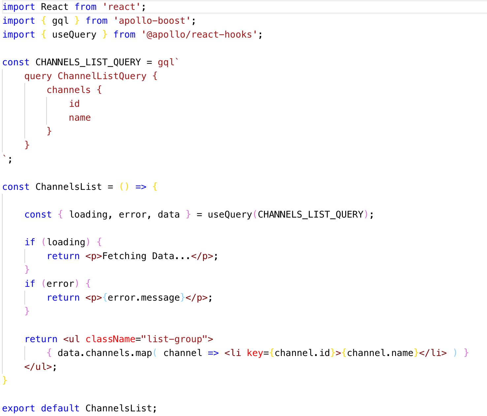
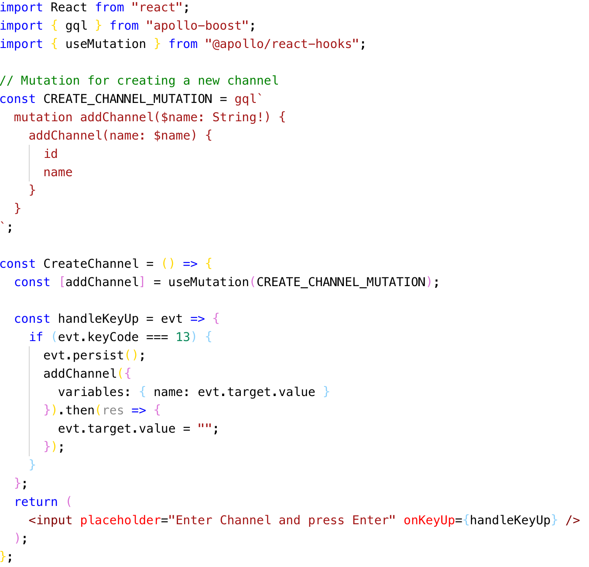
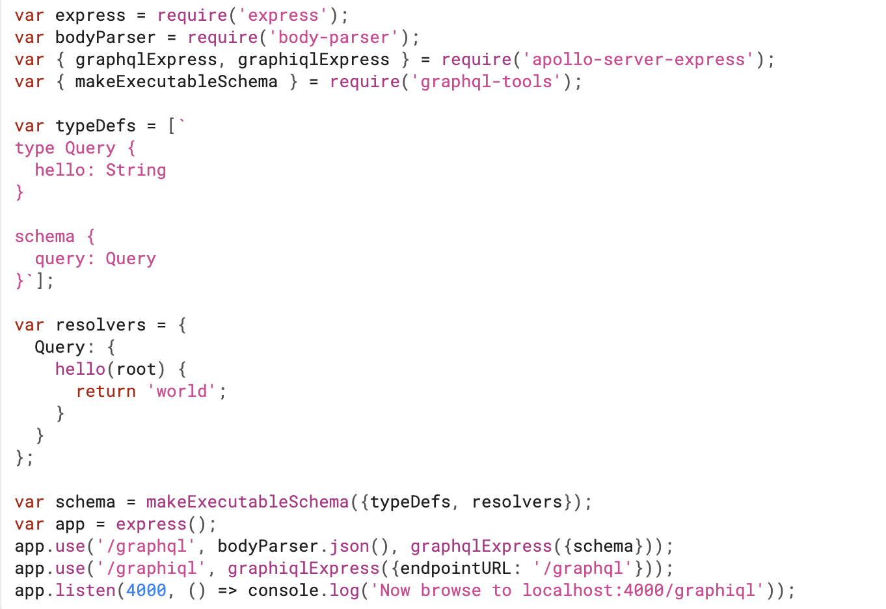

GraphQL for Frontend
by Binoy Sinha and Nishant Gupta
GraphQL
- GraphQL is a new API standard that provides a more efficient, powerful and flexible alternative to REST.
- A data query language developed by Facebook
- Used internally since 2012
- Open source version published in July 2015
- Relay released in August 2015
- Specification: https://facebook.github.io/graphql
More...
- It's a declarative data fetching
- Unlike REST, GraphQL server only exposes a single endpoint.
- You can definitely use both at the same time
- GraphQL is dope if used for the right thing
Typical Rest API

Common Issues
-
Over-fetching
- /products?field=name&field=description&field=variants[*].price
-
Under-fetching
- /products?expand=productType&expand=variants[*].price.taxRate
-
API changes and evolution
- Versioning
- Deprecation
- Maintenance
API Gateways
GraphQL Approach

Data fetching with REST
Data fetching with GraphQL
Core Concepts
- The Schema Definition Language (SDL)
- Fetching Data with Queries
- Writing Data with Mutations
- Realtime Updates with Subscriptions
- Resolvers implement the API
- Defining a Schema
Type System
type Channel {
id: ID!
name: String
messages: [Message]!
}
type Query {
channels: [Channel]
channel(id: ID!): Channel
}
type Mutation {
# A mutation to add a new channel to the list of channels
addChannel(name: String!): Channel
}
type Subscription {
channelAdded(name: String!): Channel
}
Queries
query {
user(id: 1) {
projects {
name
tasks {
description
}
}
}
}
{
"data": {
"user": {
"projects": [
{
"name": "Migrate from REST to GraphQL",
"tasks": [
{
"description": "Read tutorial"
},
{
"description": "Start coding"
}
]
},
...
]
}
}
}
Mutations
-
Three kinds of Mutations
- Creating new data.
- Updating new data.
- Deleting new data.
mutation {
createPerson(name: "Bob", age: 36) {
name
age
}
}
{
"data": {
"createPerson": {
"name": "Bob",
"age": 36
}
}
}
Subscriptions
- It represent a stream of data sent over to the client.
- Have same syntax as queries and mutations
- Similar to WebSocket, long polling, sse events in REST world
subscription ProductEvents {
channelAdded(name: 'Sony') { channel }
}
Resolvers
- It is a collection of functions that generate response for a GraphQL query.
- fieldName:(root, args, context, info) => { result }
- It accepts four positional arguments.
-
root
- The object that contains the result returned from the resolver on the parent field.
-
args
- An object with the arguments passed into the field in the query.
-
context
- This is an object shared by all resolvers in a particular query.
-
info
- It contains information about the execution state of the query, including the field name, path to the field from the root.
Resolvers: Code Snippets
export const resolvers = {
Query: {
channels: () => {
return channels;
},
channel: (root, { id }) => {
return channels.find(channel => channel.id == id);
},
},
Mutation: {
addChannel: (root, args) => {
const newChannel = { id: nextId++, name: args.name };
channels.push(newChannel);
pubsub.publish(CHANNEL_ADDED, {
[CHANNEL_ADDED]: args.name
});
return newChannel;
},
},
Subscription: {
channelAdded: {
subscribe: () => pubsub.asyncIterator(CHANNEL_ADDED),
}
}
};
Defining a Schema
type Query { ... }
type Mutation { ... }
type Subscription { ... }
type Query {
allPersons(last: Int): [Person!]!
}
type Mutation {
createPerson(name: String!, age: Int!): Person!
}
type Subscription {
newPerson: Person!
}
Backend Agnostic
Languages
Client Ecosystems
- Directly sending queries and mutations without constructing HTTP requests
- View-layer integration
- Caching
- Validating and optimizing queries based on the schema
Frameworks
-
Client Side
- Apollo Client
- Relay
-
Server Side
- graphQL.js
- express-graphql
- apollo-server
Demo Time
Writing a GraphQL Server...
- Set up packages...
- apollo-server-express: Apollo-Graphql over Express
- graphql-tools: tools to create and manipulate GraphQL schemas.
Defining the Schema...
Types
import { gql } from 'apollo-server-express';
const typeDefs = gql`
type Message {
id: ID!
text: String
}
type Channel {
id: ID! # "!" denotes a required field
name: String
messages: [Message]! # "Composing" types is that easy!
}
continued...
Defining the Schema...
Queries and Mutations
type Query {
channels: [Channel] # "[]" means this is a list of channels
channel(id: ID!): Channel
}
type Mutation {
addChannel(name: String!): Channel,
removeChannel(name: String!): Channel,
updateChannel ...
}
continued...
Defining the Schema...
Subscriptions
Clients are notified about subscribed changes in near real time.
const typeDefs = gql`
{types ...,}
{queries ...,}
{mutations ...,}
type Subscription {
channelAdded: Channel,
channelRemoved: Channel,
channelBanned: Channel,
...
}
`;
export default typeDefs;
continued...
Creating the Resolver.
Resolvers implement exactly "HOW" to get Data.
type Query {
channels: [Channel]
channel(id: ID!): Channel
}
export const resolvers = {
Query: {
channels: () => {
return channels;
},
channel: (root, { id }) => {
return channels.find(
channel => channel.id == id
);
},
},
continued...
Creating the Resolver.
type Mutation {
addChannel(name: String!): Channel
}
Mutation: {
addChannel: (root, args) => {
const newChannel = {
id: nextId++,
name: args.name
};
channels.push(newChannel);
return newChannel;
},
},
continued...
Creating the Resolver.
Subscriptions work on Pub-Sub.
type Subscription {
channelAdded: Channel
}
import { PubSub } from 'apollo-server-express';
const pubsub = new PubSub();
const CHANNEL_ADDED = 'CHANNEL_ADDED';
Mutation: {
addChannel: (root, args) => {
const newChannel = {
id: nextId++,
name: args.name
};
channels.push(newChannel);
// Publish the event with new channel data
pubsub.publish(CHANNEL_ADDED, {
channelAdded: args
});
return newChannel;
},
},
continued...
Tying everything together...
// Create the Server
const server = new ApolloServer({
typeDefs,
resolvers,
});
// The `listen` method launches a web server.
server.listen().then(({ url }) => {
console.log(`🚀 Server ready at ${url}`);
});
GraphQL Client
Set up packages..
- apollo-boost: Package containing everything you need to set up Apollo Client
- @apollo/react-hooks: React hooks based view layer integration
- graphql: Parses GraphQL queries
Query Snippet
Mutations Snippet
Server Side snippet
Disadvantages
- Queries always return a HTTP status code of 200
- Lack of built-in caching support
- Query Complexity
- Query depths
Security
- Timeout
- Maximum Query Depth
- Query Complexity
- Throttling
Common Questions
- Is GraphQL a Database Technology?
- Is GraphQL only for React / Javascript Developers?
- How to do Server-side Caching?
- How to do Authentication and Authorization?
- How to do Error Handling?
- Does GraphQL Support Offline Usage?